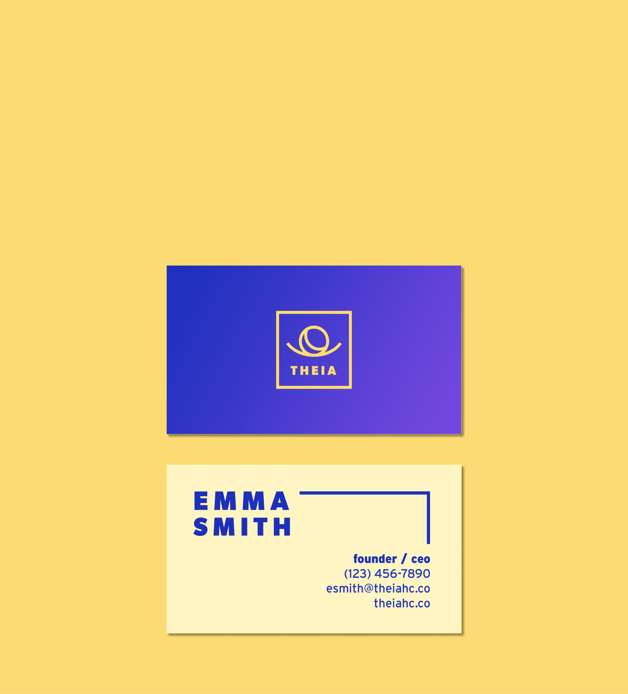
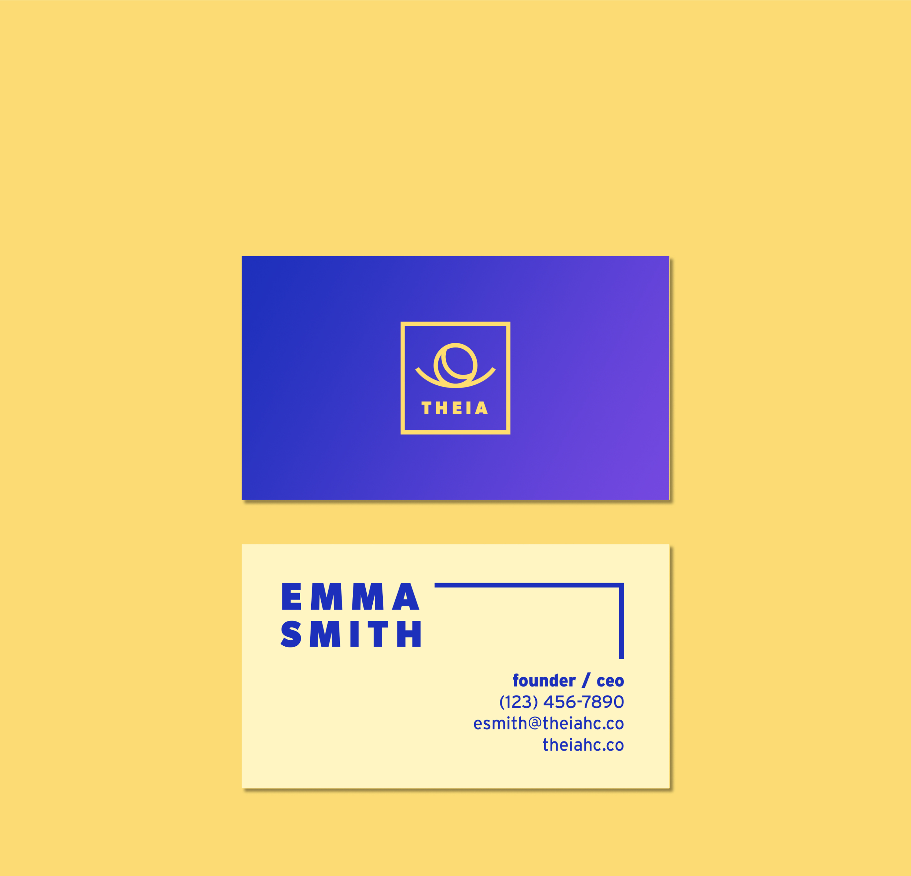
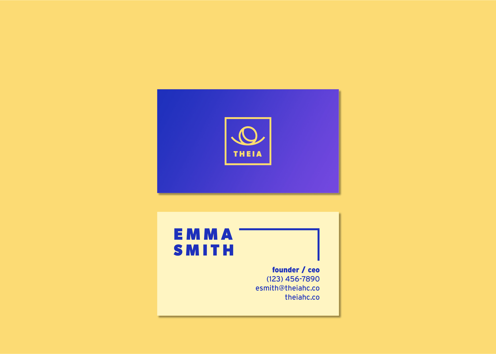
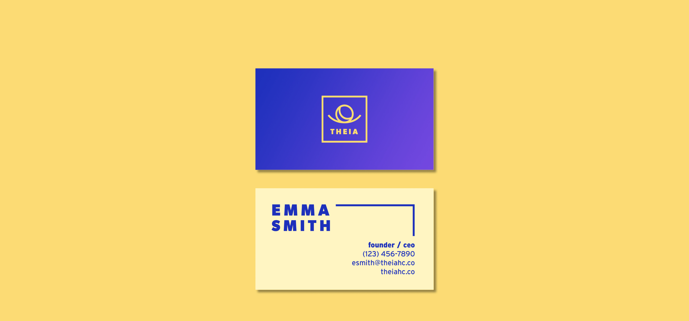
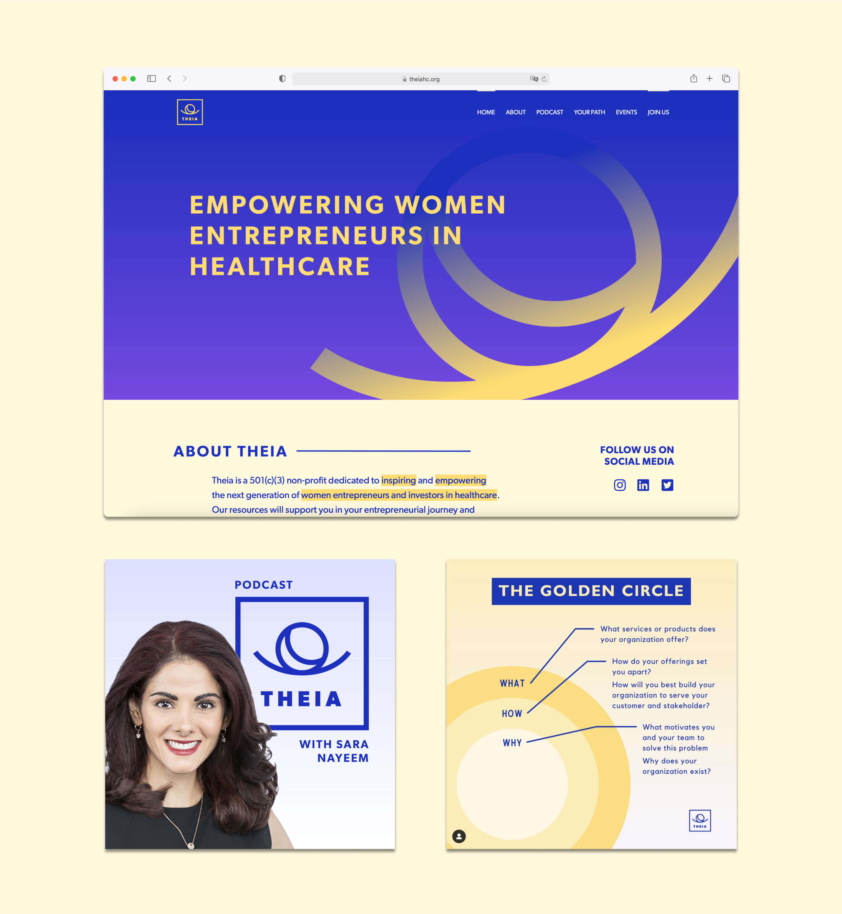
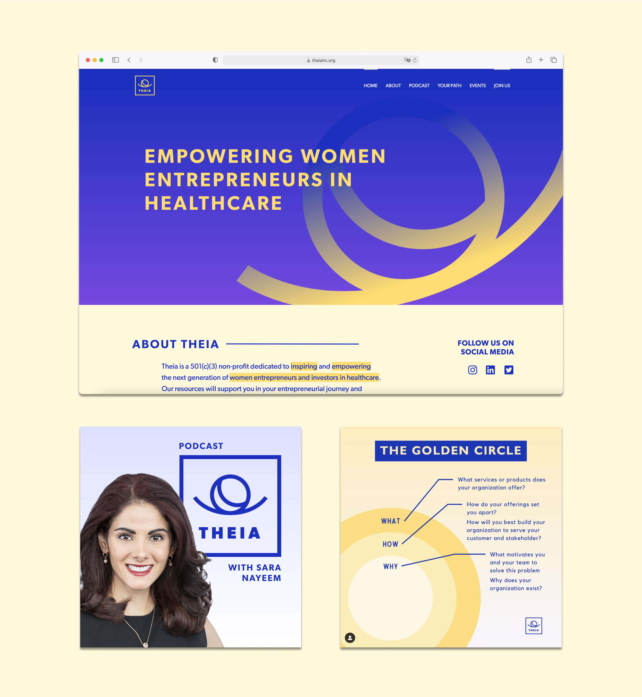

Theia
Role: Visual Identity and Web Designer
Co-Designer: Sabrina Tian
Date: 2020 - 2021
Summary: Theia is an organization that promotes female entrepreneurship in the healthcare industry. It was founded by three women who observed the lack of resources and opportunities for women to develop their own companies within the healthcare sector. Throughout the course of Theia’s first year as a nonprofit, I worked on creating a visual identity that would encapsulate Theia’s mission.
The founders wanted a logo that would be versatile, legible, and representative of Theia’s mission. Theia’s mission is best exemplified by its name, which is taken after the Greek Titan goddess of sight (the mother of the sun, moon, and dawn). Similar to this goddess, Theia as a company aims to shed light on rising female entrepreneurs and provide them with the “sight” and resources necessary to succeed in the healthcare industry.
Symbol: At the core of the logo, we wanted a strong visual representation of Theia’s goals as a company. We came up with a few keywords to narrow down what this symbol should convey: sight, light, nurturing, and growth. We incorporated all three of these elements through the abstract shape shown below. This shape can take on many different forms. From one angle, it can appear as an eye—a nod to the word “sight.” Within that eye is a crescent shape—symbolizing the moon—which is one of the only sources of light at night. From another angle, the shape can appear as a blooming flower. This simultaneously conveys the keywords “growth” and “nurture,” emphasized by the cradling gesture of the bottom curve. Together, these subtle references create a simple, abstracted symbol.
Typeface: Since we placed so much focus on the logo’s main symbol, we picked a typeface that would be able to hold down the complexity of the symbol without being overly intrusive. This meant sticking to a simple, clean, and bold font: Gibson Bold.
Details: We framed the symbol and typeface with a box. This decision arose from a desire to unify the geometric nature of the typeface and the curved elements of the symbol. The box achieved this by providing a sense of structure and stability.
Color: Theia is a bold organization that acts as a light source towards young female entrepreneurs. We felt that the color scheme should reflect this. Thus, a color scheme of blue, purple, and yellow was selected. Not only are these colors bold, but they also reflect the theme of vision through moonlight.
Application: This logo inspired and drove the design for Theia’s social media, podcast, and website. The logomark itself was utilized as a design element on the website and podcast cover. Additionally, the symbol displayed its versatility through its ability to function on a smaller scale in social media posts.
 
